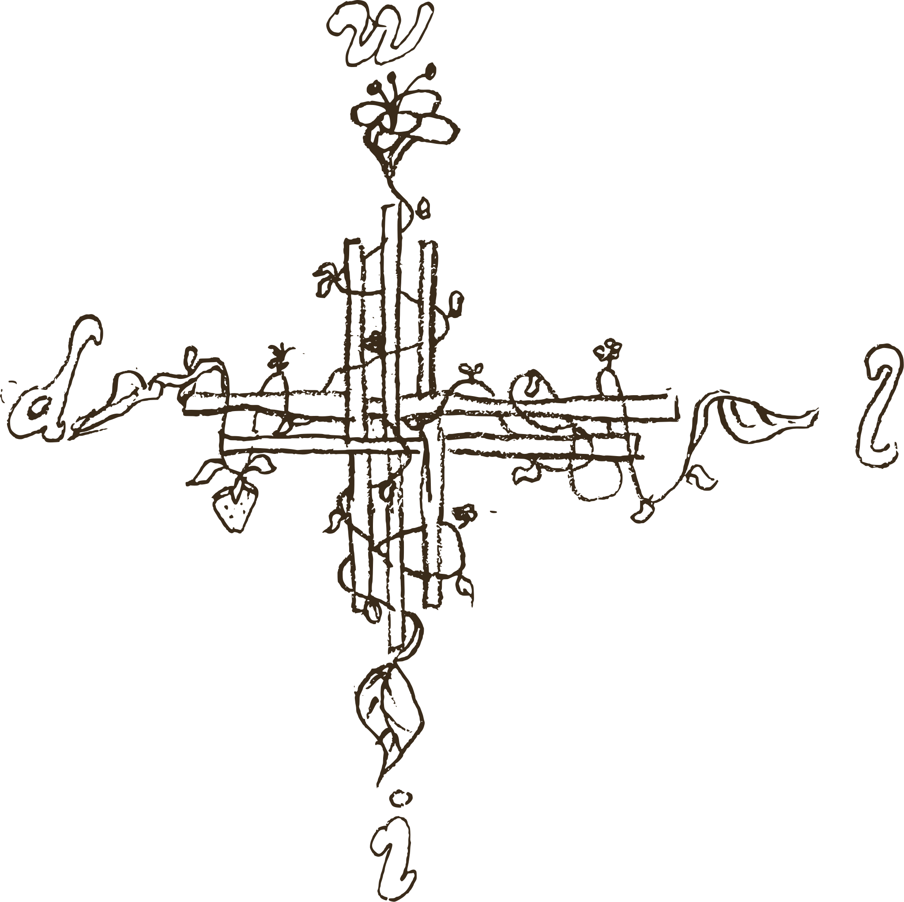
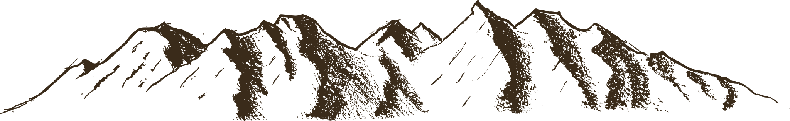
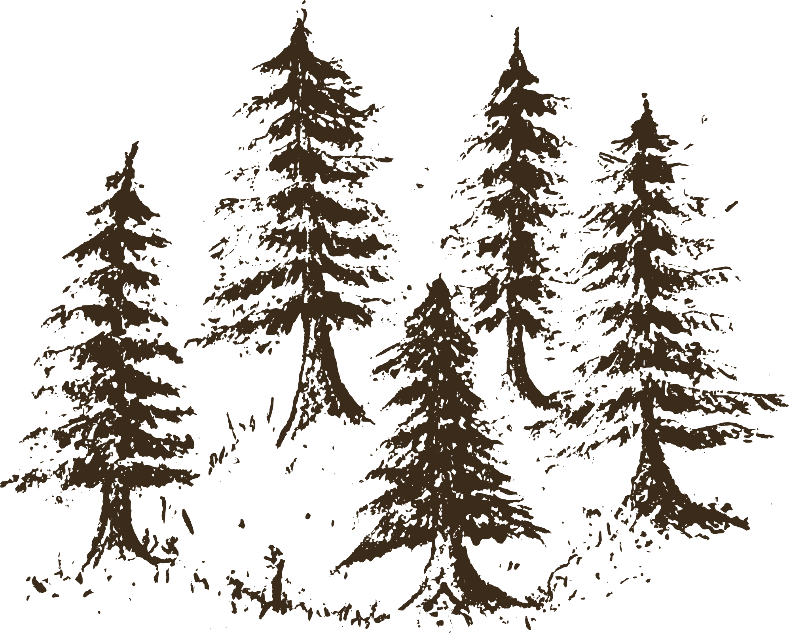
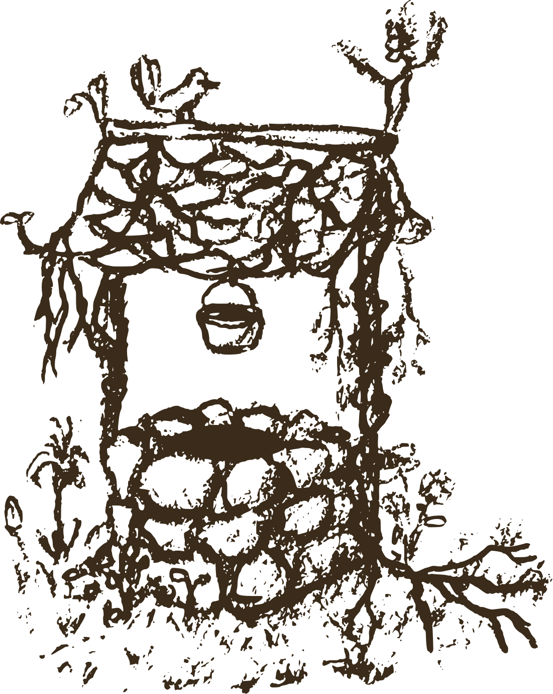
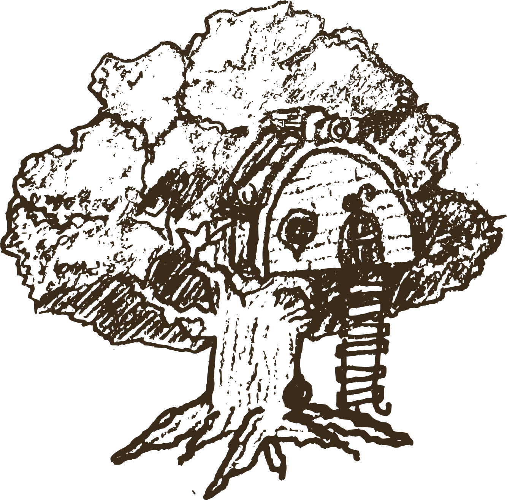
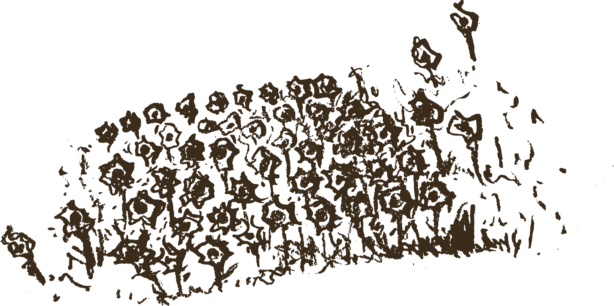
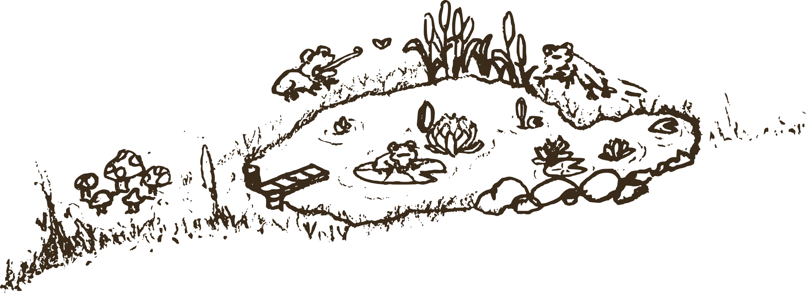

welcome to the
wild fairy garden
click to explore

⛰️
pigeon's peak

🌲
singing hollow

🪣
wishing well

🌳
faraway tree

🌼
field of golden daffodils

🐸
frog pond
drag to explore
· scroll or pinch to zoom